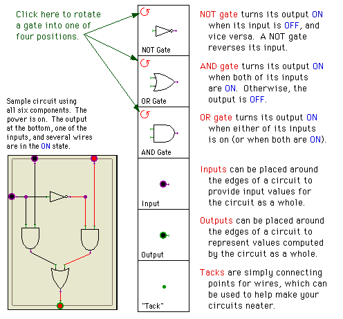
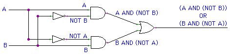
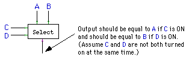
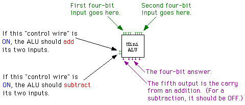
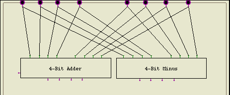

Labs for The Most Complex Machine
xLogicCircuits Lab 1: Logic Circuits
IT IS POSSIBLE IN THEORY to construct a computer entirely out of transistors (although in practice, other types of basic components are also used). Of course, in the process of assembling a computer, individual transistors are first assembled into relatively simple circuits, which are then assembled into more complex circuits, and so on. The first step in this process is to build logic gates, which are circuits that compute basic logical operations such as AND, OR, and NOT. In fact, once AND, OR, and NOT gates are available, a computer could be assembled entirely from such gates. In this lab you will work with simulated circuits made up of AND, OR and NOT gates. You will be able to build such circuits and see how they operate. And you will see how simpler circuits can be combined to produce more complex circuits.
This lab covers some of the same material as Chapter 2 in The Most Complex Machine. The lab is self-contained, but many of the ideas covered here are covered in more depth in the text, and it would be useful for you to read Chapter 2 before doing the lab.
This lab includes the following sections:
- Logic and Circuits
- Building Circuits
- Complex Circuits and Subcircuits
- Circuits and Arithmetic
- Exercises
The lab uses an applet called "xLogicCircuits." Start the lab by clicking this button to launch the xLogicCircuits applet in its own window:
(For a full list of labs and applets, see the index page.)
Logic and Circuits
A logic gate is a simple circuit with one or two inputs and one output. The inputs and outputs can be either ON or OFF, and the value of a gate's output is completely determined by the values of its inputs (with the proviso that when one of the inputs is changed, it takes some small amount of time for the output to change in response). Each gate does a simple computation. Circuits that do complex computations can be built by connecting outputs of some gates to inputs of others. In fact, an entire computer can be built in this way.
In the xLogicCircuits applet, circuits are constructed from AND gates, OR gates, and NOT gates. Each type of gate has a different rule for computing its output value. Circuits are laid out on a circuit board. Besides gates, the circuit board can contain Inputs, Outputs, and Tacks. Later, we'll see that circuits can also contain other circuits. All these components can be interconnected by wires. To the left of the circuit board in the applet is a pallette. The pallette contains components available to be used on the circuit board. You can't usually see all the components at once, but there is a scroll bar that allows you to scroll through all the components on the pallette. The following illustration shows the part of the pallette that contains the six standard components, along with some comments and a small sample circuit:

(One thing you should note: Wires cannot connect to each other except at Tacks. Just because two wires cross each other on the circuit board does not mean that they are connected. That is, no signal will propagate from one of the wires to another. Wires can only carry signals between components such as gates, Tacks, Inputs, and Outputs.)
The applet that you launched above should start up showing a sample circuit called "Basic Gates." At the top of the circuit board are an AND gate, an OR gate, and a NOT gate. The gates are connected to some Inputs and Outputs. A more complicated circuit built from several gates occupies the bottom of the circuit board.
To see how the circuit works, you have to turn on the power. Power to the circuit board is turned on and off using the "Power" checkbox below the circuit board. The power is ON when the box is checked. Click on the Power checkbox now to turn on the power. (Why does the wire leading from the NOT gate come on when you do this?) When the power is on, you have control over the Inputs on the circuit board: you can turn an input ON and OFF by clicking on it. The circuit does the rest: signals from the Inputs propagate along wires, through gates and other components, and to the Outputs of the circuit. Try it with the sample circuit. If you have a problem, make sure the power is on and that you are clicking on an Input, not an Output.
You should check that the AND, OR, and NOT gates at the top of the circuit board have the expected behavior when you turn their inputs ON and OFF. You can also investigate the circuit in the bottom half of the logic board. Below the circuit board, to the left of the Power switch, you'll find a pop-up menu that can be used to control the speed at which signals propagate through the circuit. The speed is ordinarily set to "Fast." You can use the pop-up menu to change the speed to "Moderate" or "Slow" if you want to watch the circuit in slow motion. (For the most part, though, you probably want to leave the speed set to Fast.)
Logic gates and logic circuits are associated with mathematical logic, which is the study of the computations that can be done with the logical values true and false and with the logical operators and, or, and not. This association comes about when we think of ON as representing true and OFF as representing false. In that case, AND, OR, and NOT gates do the same computations as the operators and, or, and not.
Mathematical logic uses Boolean algebra, in which the letters A, B, C, and so on, are used to represent logical values. Letters are combined using the logical operators and, or, and not. For example,
(A and C) or (B and (not C))
is an expression of Boolean algebra. As soon as the letters in an expression are assigned values true or false, the value of the entire expression can be computed.
Every expression of boolean algebra corresponds to a logic circuit. The letters used in the expression are represented by the Inputs to the circuit. Each wire in the circuit represents some part of the expression. A gate takes the values from its input wires and combines them with the appropriate word -- and, or, or not -- to produce the label on its output wire. The final output of the whole circuit represents the expression as a whole. For example, consider the sample circuit from the applet. If the inputs are labeled A and B, then the wires in the circuit can be labeled as follows:

The circuit as a whole corresponds to the final output expression, (A and (not B)) or (B and (not A)). This expression in turn serves as a blueprint for the circuit. You can use it as a guide for building the circuit. The expression given earlier, (A and C) or (B and (not C)), corresponds to another sample circuit shown in the illustration above -- provided you label the inputs appropriately.
To sum up, given any expression of Boolean algebra, a circuit can be built to compute that expression. Conversely, any output of a logic circuit that does not contain a "feedback loop" can be described by a Boolean algebra expression. This is a powerful association that is useful in understanding and designing logic circuits. (Note: Feedback occurs when the output of a gate is connected through one or more other components back to an input of the same gate. Circuits with feedback are not covered in this lab. However, they have important uses that are covered in the next lab.)
Building Circuits
You can build your own circuits in the xLogicCircuits applet. Click on the "Iconify" button at the bottom of the applet. This will put away the "Basic Gates" circuit, by turning it into an icon on the pallette. You'll have a clear circuit board to work on. As an exercise, try to make a copy of the sample circuit shown above, which corresponds to the Boolean expression
(A and C) or (B and (not C)).
To add a component to your circuit, click on the component in the pallette, hold down the mouse button, and use the mouse to drag the component onto the circuit board. Make sure you drag it completely onto the board. If you want a gate that is facing in a different direction, you have to rotate the gate in the pallette before you drag it onto the circuit board.
Once some components are on the board, you can draw wires between them using the mouse. Every wire goes from a source to a destination. To draw a wire, move the mouse over the source, click and hold the mouse button, move the mouse to the destination, and release the button. You must draw the wire from source to destination, not the reverse. If you release the mouse button when the wire is not over a legal destination, no wire will be drawn. When there are two possible destinations in one component -- such as the two inputs of an AND or OR gate -- make sure that you get the wire connected to the right one.
Circuit Inputs are valid sources for wires. So are Tacks. So are the outputs of gates. Valid destinations include circuit Outputs, inputs of gates, and Tacks. You can draw as many wires as you want from a source, but you can only draw one wire to a destination. (This makes sense because when the circuit is running, a destination takes its value from the single wire that leads to it. On the other hand, the value of a source can be sent to any number of wires that lead from it.)
Once a component is on the board, you can still move it to a new position, but you have to drag it using the right mouse button. Alternatively -- if you have a one-button mouse, for example -- you can drag a component by holding down the control key as you first press the mouse button on it.
You can delete components and wires that you've added by mistake. Just click on the component or wire to hilite it. Then click on the "Delete" button at the bottom of the applet. The hilited item will be deleted from the circuit board. If you delete a component that has wires attached, the attached wires will also be deleted along with the component.
If you delete an item or modify the circuit in some other way, you get one chance to change your mind. You can click on the "Undo" button to undo one operation. Only the most recent operation can be undone in this way.
There is one shortcut that you might find useful, if you like using Tacks. You can insert a Tack into an existing wire by double-clicking on the wire. If you double-click and hold the mouse down on the second click, you can drag the tack to a different position. (However, some browsers might not support double-clicks.)
After you build the practice circuit, you can clear the screen, since you won't need that circuit again in the rest of the lab. However, you'll get more practice building circuits in the Exercises at the end of the lab.
Complex Circuits and Subcircuits
In order to have circuits that display structured complexity, it is important to be able to build on previous work when designing new circuits. Once a circuit has been designed and saved, it should be possible to use that circuit as a component in a more complex circuit. A lot of the power of xLogicCircuits comes from the ability to use circuits as components in other circuits. Circuits used in this way are called subcircuits. A circuit that has been saved as an icon in the pallette can simply be dragged into another circuit. (More exactly, a copy of the circuit is created and is added to the circuit board. The copy is a separate circuit; editing the original will not change the copy.) This ability to build on previous work is essential for creating complex circuits.
You can open a circuit from the pallette to see what's inside or to edit it. Just click on the icon to hilite it, and then click on the "Enlarge" button. The icon will be removed from the pallette and the circuit will appear on the circuit board. At the same time, any circuit that was previously on the circuit board will be iconified and placed on the pallette. You should also be able to enlarge a circuit just by double-clicking on it. (By the way, you can change the name of the circuit on the circuit board by editing the text-input box at the top of the applet. This box contains the name that appears on the iconified circuit.)
The xLogicCircuits applet should have loaded several subcircuits for the pallette. One of these circuits is called "Two or More". Open this circut now. The circuit has three inputs. It turns its output ON whenever at least two of its inputs are ON. Try it. (Click on the inputs to turn them ON and OFF -- and don't forget to turn the Power on first.)
As a simple exercise in building circuits from subcircuits, use the "Two or More" circuit as part of a "At Most One" circuit. You want to build a circuit with three inputs that will turn on its output whenever zero or one of its inputs is on. Notice that this is just the opposite behavior from the "Two or More" circuit. That is, "At Most One" is ON whenever "Two or More" is not ON. This "logical" description shows that the "At Most One" circuit can be built from a NOT gate and a copy of the "Two or More" circuit. Begin by re-Iconifying the "Two or More" circuit, then drag a NOT gate and a copy of "Two or More" onto the empty circuit board. Add Inputs, Outputs, and wires as appropriate, then test your circuit to make sure that it works. If you like, you can give it a name and turn it into an icon.
Next, open the "4-Bit Adder" sample circuit. You'll see that it contains several copies of a subcircuit called "Adder." It's possible to look inside one of these circuits: Just click on the adder circuit to hilite it, and then click the "Enlarge" button. This does not remove the main circuit from the board -- it just lets you see an enlarged part of it. When you shrink the subcircuit back down to its original size, the main circuit is still there. In this case, you'll see that an "Adder" circuit contains two "Half Adder" subcircuits, which you can enlarge in their turn, if you want.
Circuits and Arithmetic
The "4-Bit Adder" circuit is an example of a logic circuit that can work with binary numbers. Circuits can work with binary numbers as soon as you think of ON as representing the binary value 1 (one) and OFF as representing the value 0 (zero). The "4-Bit Adder" can add two 4-bit binary numbers to give a five digit result. Here are some examples of adding 4-bit binary numbers:
1011 1111 1111 1010 0111 0001 0110 0001 1111 0101 1010 0011 ----- ----- ----- ----- ----- ----- 10001 10000 11110 01111 10001 00100The answer has 5 bits because there can be a carry from the left-most column. Each of the four "Adder" circuits in the "4-Bit Adder" handles one of the columns in the sum. You should test the "4-Bit Adder" to see that it gets the right answers for the above sums. The two four-bit numbers that are to be added are put on the eight Inputs at the top of "4-Bit Adder". The sum appears on the outputs at the bottom, with the fifth bit -- the final carry -- appearing on the output on the right. You should observe that it takes some time after you set the inputs for the circuits to perform its computations.
Exercises
Exercise 1: One of the examples in this lab was the circuit corresponding to the expression
(A and (not B)) or (B and (not A)).
This circuit is ON if exactly one of its inputs is on. Another way to describe the output is to say that it is ON if "one or the other of the inputs is on, but not both of the inputs are on." This description corresponds to the Boolean expression
(A or B) and (not ((A and B)).
Build a circuit corresponding to the second expression, and check that it gives the same output as the first circuit for every possible combination of inputs.
Exercise 2: When you checked "every possible combination of inputs" for the circuit in Exercise 1, how many combinations did you have to check? If you wanted to check that the "Two or More" example circuit works correctly for every possible combination of inputs, how many combinations would you have to check? Why? If you wanted to check that the "4-Bit Adder" gives the correct answer for each possible set of inputs, how many inputs are there to check? Why?
Exercise 3:Consider the following three Boolean algebra expressions:
(A and B and C) or (not B)
(not ((not A) and (not B)))
(not (A or B)) or (A and B)
For each expression, build a logic circuit that computes the value of that expression. Write a paragraph that explains the method that you apply when you build circuits from expressions. (One note: To build a circuit for an expression of the form (X and Y and Z), you should insert some extra parentheses, which don't change the answer. Think of the expression as ((X and Y) and Z), and build the circuit using two AND gates.)
Exercise 4: Given a logic circuit that does not contain any feedback loops, it is possible to find a Boolean algebra expression that describes each output of that circuit. Open the circuit called "For Ex. 4", which was one of the sample circuits in the applet's pallette. This circuit has four inputs and three outputs. Assuming that the inputs are called A, B, C, and D, find the expression that corresponds to each of the three outputs. Also write a paragraph that discusses the procedure that you apply to find the Boolean expression for the output of a circuit.
Exercise 5: Consider the following input/output table for a circuit with two inputs and one output. The table gives the desired output of the circuit for each possible combination of inputs.
Input 1 Input 2 Output ON ON ON ON OFF ON OFF ON OFF OFF OFF ON Construct a circuit that displays the specified behavior. You have to build one circuit that satisfies all four rows of the table. Section 2.1 of The Most Complex Machines gives a general method for constructing a circuit specified by an input/output table. You can apply that method, or you can just try to reason logically about what the table says. Write a paragraph discussing how you found your circuit.
Exercise 6: One of the examples in this lab was a circuit called "Two or More", which checks whether at least two of its inputs are on. Consider the problem of finding a similar circuit with four inputs. The output should be on if any two (or more) of the inputs are on. A circuit that does this can be described by the Boolean expression:
(A and (B or C or D)) or (B and (C or D)) or (C and D)
Use this expression to construct a "Two or More" circuit with four inputs. Try to understand where this expression comes from. Why does it make sense? (Hint: Think of two cases, one case where the input A is ON, and the other case where the input A is OFF.) Write a paragraph explaining this. The form of this expression can be extended to handle circuits with any number of inputs. Write down a logical expression that describes a circuit with five inputs that turns on its output whenever two or more of the inputs are on.
Exercise 7: "The structure of the 4-Bit Adder circuit reflects the structure of the compution it is designed to perform." In what sense is this true? What does it mean? How does this relate to problem-solving in general?
Exercise 8: Write a short essay (of several paragraphs) that explains how subcircuits are used in the construction of complex circuits and why the ability to make and use subcircuits in this way is so important.
Exercise 9: Build a "Select" circuit, as shown in this illustration:

The circuit has two inputs, A and B, at the top. It also has two inputs, C and D, on the left, which serve as control wires. (The only thing that makes an input of a circuit a control wire is that the designer of the circuit says it is, but in general control wires are thought of as controlling the circuit in some way.) The control wires determine which of the inputs, A or B, gets to the output. In order to do this exercise, you should think "logically." That is, try to describe the output of the circuit using a Boolean expression involving A, B, C, and D. Then use that expression as a blueprint for the circuit. Test your circuit and save it for use in Exercise 10.
Exercise 10: For this exercise, you should build a "Mini ALU" that can do either addition or subtraction of four-bit binary numbers. An Arithmetic Logic Unit, or ALU, is the part of a computer that does the basic arithmetic and logical computations. It takes two binary numbers and computes some output. The interesting thing is that an ALU can perform several different operations. It has control wires to tell it which operation to perform. You will build an ALU that can perform either addition or subtraction of four-bit binary numbers. It has two control wires. Turning on one of these will make it do an addition; turning on the other will make it do a subtraction. You should construct the circuit as specified by this illustration:

Now, an interesting thing about an ALU is that it actually performs all the computations that it knows how to do. The control wires just control which of the answers get to the outputs of the ALU. To make your "Mini ALU," you can start with the "4-Bit Adder" and "4-Bit Minus" circuits, which were provided to you in the applet's palette. (The four-bit subtraction circuit has only four outputs, since for subtraction the carry bit from the leftmost adder does not provide any useful information. You don't have to worry about how the Minus circuit works -- you don't even have to understand how negative numbers are represented in binary.)
Start by placing a "4-Bit Adder" and a "4-Bit Minus" circuit on an empty circuit board, along with the eight inputs at the top of the circuit. These can be connected as shown:

(Note: To change the size and shape of a subcircuit, click the circuit to hilite it. When a circuit is hilited, it is surrounded by a rectangle with a little square handle in each corner. You can click-and-drag one of these handles to adjust the size of the circuit.)
All you have to do is construct the rest of the circuit so that the control wires can control whether the answer from the "4-Bit Adder" or the answer from the "4-Bit Minus" gets through to the Outputs of the ALU. One way to do this is to use four copies of the "Select" circuit that you built for Exercise 9.
This is one of a series of labs written to be used with The Most Complex Machine: A Survey of Computers and Computing, an introductory computer science textbook by David Eck. For the most part, the labs are also useful on their own, and they can be freely used and distributed for private, non-commercial purposes. However, they should not be used as a formal part of a course unless The Most Complex Machine is also adopted for use in that course.--David Eck (eck@hws.edu), Summer 1997